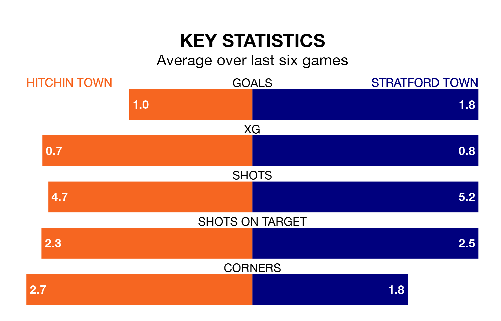

Hitchin Town are on a terrible run ahead of hosting Stratford Town at Top Field on Saturday, with just one point collected from their last six games.
Hitchin have picked up just one draw in their last six Southern League Premier – Central games, and face a Stratford Town side whose last six games have brought three wins and two draws.
With 48 goals in 26 games so far this season, Stratford are scoring more than average in the league with 1.8 goals per game. And they are conceding at an average rate, letting in 40 goals at a rate of 1.5 per game.
Hitchin, meanwhile, are average scorers, with 1.5 goals per game. They have also conceded 1.5 goals per game.
In the last 10 years, Hitchin and Stratford have played each other on 16 occasions. Hitchin won 10 of them, Stratford four, and they drew twice.
On average, Hitchin scored 1.6 goals and Stratford Town 1.0 in those matches.
Their last meeting was on October 31, when Hitchin won 1-0 away.
Stratford Town are fifth in the table after 26 games, of which they have won 14 and drawn four, earning 46 points.
Hitchin Town are five places behind the away team in 10th, with 11 wins and five draws putting them on 38 points.
Hitchin's last match was on January 27, a 1-0 loss against Kettering Town.
Stratford beat Barwell 4-3 last time out, on January 13.
Updated: 15:45 (UTC), 02/02/24